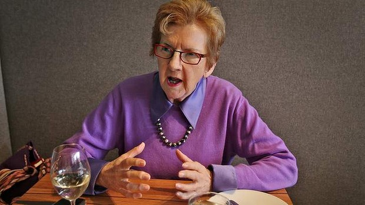

Lunch with ... Patricia Edgar
September 28, 2013
Amanda Dunn
Patricia Edgar has turned her focus to ageing and finds our approach leaves much to be desired.

Age old concern: 'Longevity is negotiable,' says Patricia Edgar, and reinvention is key. Photo: Ken Irwin
Like many people, Patricia Edgar had never really given ageing - or more particularly, old age - much thought. Her parents lived long lives and had mercifully quick deaths, her mother at 89 and her father at 95.
"I just had this vague notion, to the extent that I thought about it at all, that you got very old and you died, and that was it," the sociologist and writer says.
But then she turned 70, and three things happened to bring her own ageing into sharp relief.
Huxtable fare: Barramundi. Photo: Ken Irwin
At a routine pap smear, she was told she would no longer be notified that she was due for the biennial check (although she was still welcome to have it); at a colonoscopy she had regularly because her father had had bowel cancer, she was again told that she needn't worry about it any more, as at 70 she was considered "clear". Edgar had had breast cancer in 1998, but her specialist told her similar news: she needn't bother with any more appointments.
Advertisement
"[There was] this constant message of 'don't come back'," Edgar explains. "So I said to my GP, 'what's going on?' He said, 'A new cancer would take about eight years to develop and your age expectancy kicks in around then.' "
She was left with the feeling that testing her was no longer worth the expense to the medical system.
Lamb with smoked eggplant. Photo: Ken Irwin
Add to this the general ''invisibility'' that older people - and older women in particular - can feel, and the ways in which, Edgar believes, they are routinely dismissed or patronised, and the conclusion she draws is that something is seriously wrong with the way we think about, talk about and manage ageing in Australia.
The result of her research and thinking is a new book, In Praise of Ageing, which deftly mixes a sociological and economic study with personal accounts of older Australians leading extraordinary lives and taking their old age in their stride.
To talk all of this through we have taken a corner table at Huxtable, a funky restaurant on Smith Street, just up from the Australian Children's Television Association, which Edgar headed until 2002, and not far from the two houses - one for living, the other for working - she shares with her husband, fellow sociologist and writer Don Edgar.
For lunch, Edgar chooses the barramundi with mushroom duxelles, pickled cauliflower and mustard sauce; I opt for the lamb with smoked eggplant, farro and kale. Outside, the young and hip of Smith Street go about their business; inside, we contemplate the nature of getting old.
While some parts of the health system seem eager to move older people on, Edgar argues, other parts are pathologising old age. As a consequence, ageing is increasingly ''treated'' pharmacologically, for example in the race to find an effective treatment for dementia.
And, she says, we must get better at talking about death, which surely undergirds so much of our discomfort with old age and people. "It's really important to talk about death and it's important not to have these [medical] interventions which keep people living for a very long time, expensively."
Not that ageing is all bad news. While Edgar was taken aback by the extent to which older people are not taken seriously - not just by the health system, but as vital cogs in the economic wheel - she simultaneously came across older Australians, many in their 90s, who were ageing fabulously, and wanted to tell that side of the story too.
At the heart of Edgar's thinking were some tricky questions: what decides how well we age? Why do some people seem to retreat and wither, while others blossom in their later years, embrace new experiences and thrive? She concluded that while our genetic make-up might play a role in how well we age, what mattered far more was our attitude to it.
"Longevity is negotiable," she says. "It's really the way in which people face up to what's happened in their lives."
She also looked at how older people are represented in popular media and in entertainment, such as on television, and found some damaging and dated stereotypes.
With Australians on average now living into their 80s, and a 100th birthday nowhere near as remarkable as it used to be, why would people of 60 be referred to as "elderly", she wondered? Similarly, why are older Australians so absent from television - except in the most minor representations - when they are such heavy television viewers?
"I know from the research that if you don't see yourself on television, then you think you're not very important," she says.
Television is, of course, a young person's medium, and much of that is driven by advertising. But Edgar thinks that will shift as the baby boomer generation moves into old age.
"It's going to change because the baby boomers have got money and there is a bit of commercial potential there."
In some ways, she says, the way we think about older Australians needs to undergo the same shift that happened with adolescence in the post-World War II years, when the idea of a bridging age between childhood and adulthood really came into being.
As to how to age well, Edgar says she learnt a great deal on this from her nonagenarian friends, the most important of which was that those who did best were the people who "reinvented" themselves, learnt new skills and hobbies and kept their bodies and minds active.
Edgar, 76, feels like a youngster alongside them, and has no sense of old age looming. She is busy with grandchildren, various artistic and cultural interests, and has already started working on her next book.
"No matter who you are, you cannot retire and do nothing. You've got to have a project of some kind," she says. That may mean deciding to stay in paid work longer (where prejudice against older workers lingers), or pursuing an interest such as gardening, bowling or writing. "The people who are doing nothing, they're the ones who get depressed."
Embracing old age as best we can and staying engaged with other people are vital to us living as well as possible in our later years.
"In the end, old age will get everybody," Edgar says. "It's the way it's dealt with [that matters]."